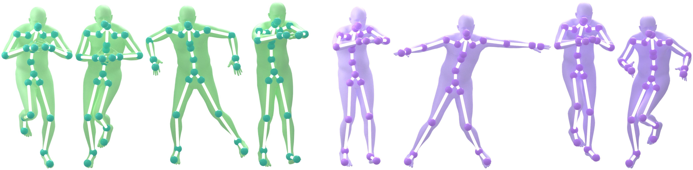
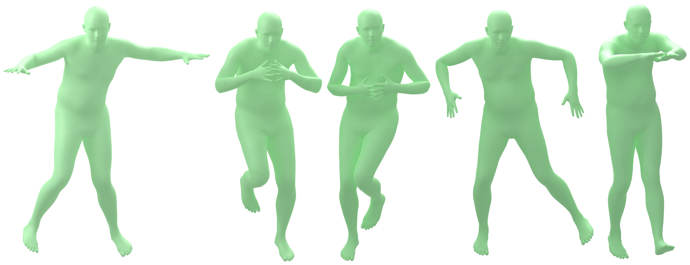
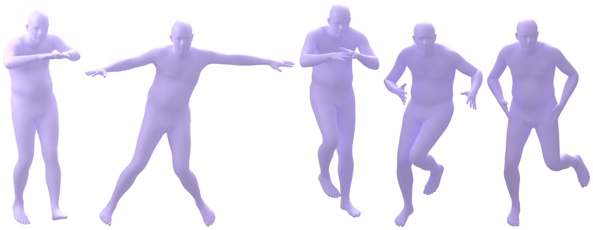

Temporal coherence
A dancer must keep style in memory, react to new musical cues, and anticipate the next motion.
Music-conditioned dance generation

Improvising to unheard music is future-motion prediction in disguise.
A dancer must keep style in memory, react to new musical cues, and anticipate the next motion.
Steps must remain balanced, grounded, joint-consistent, and physically believable.
Even trained humans struggle to align rhythm, intention, and full-body control in real time.
\(a_t\): the music segment that drives the next movement
\(s_t\): Sequence of 3D body poses
abstract pose into a smoother, predictive target
3D coordinates are pose-dependent, local, and sensitive to parameterization choices.
We need a motion representation that makes music actions predictable.
paired choreography, music audio, and 3D body motion aligned on a shared timeline
sample temporal windows: current state chunk, next music chunk, future state chunk
Hyperparameters: fps 30, horizon 60, segment length 60, no filtering rules
Li et al., AIST++: Dance Motion Dataset for Music Conditioned 3D Dance Generation, ICCV 2021. Loper et al., SMPL: A Skinned Multi-Person Linear Model, SIGGRAPH Asia 2015.

\(s_t\)
\(s_{t+1}\)